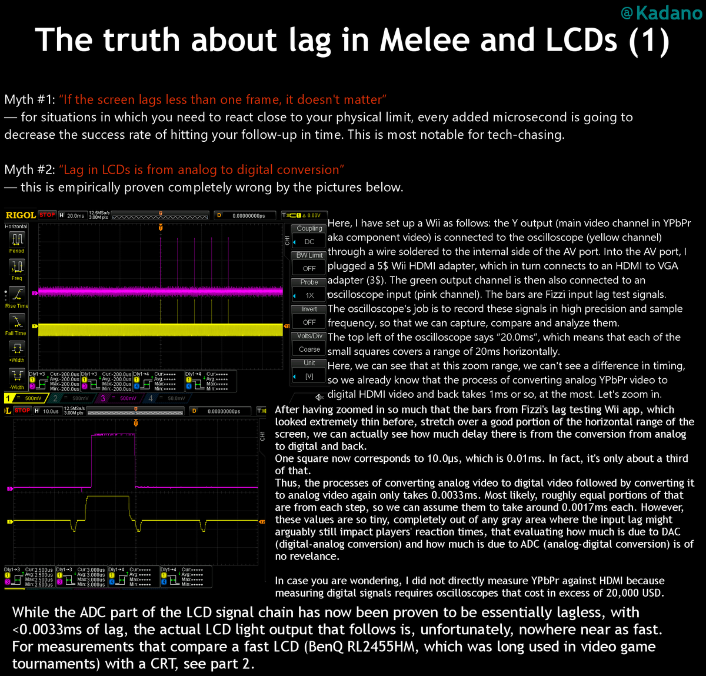
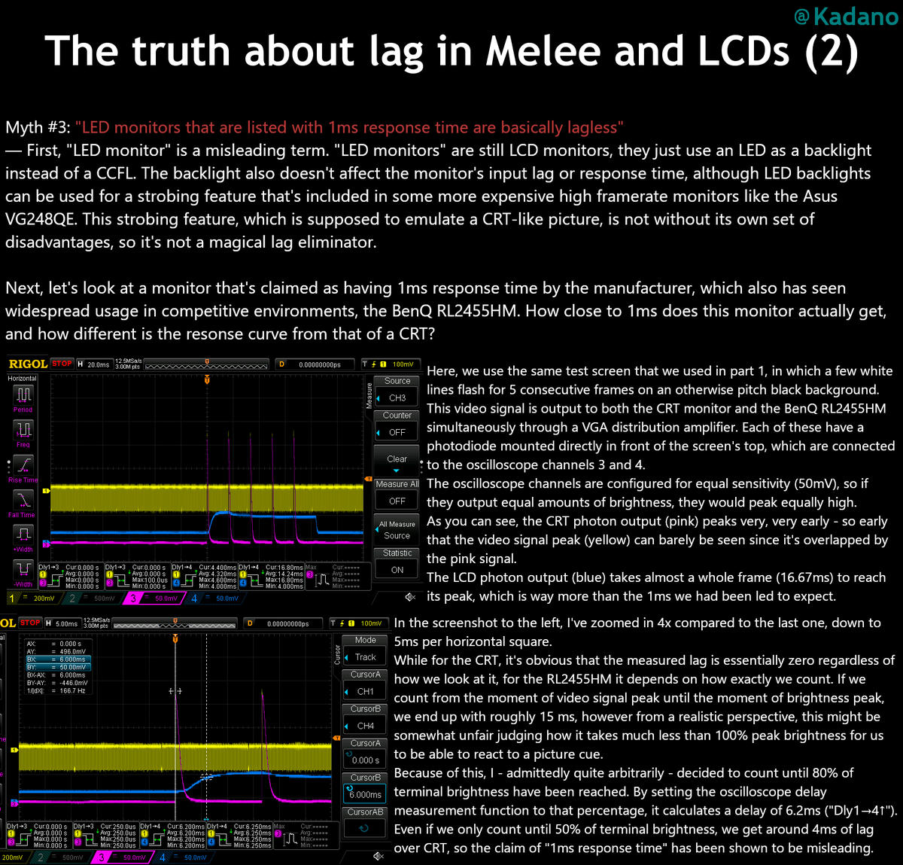
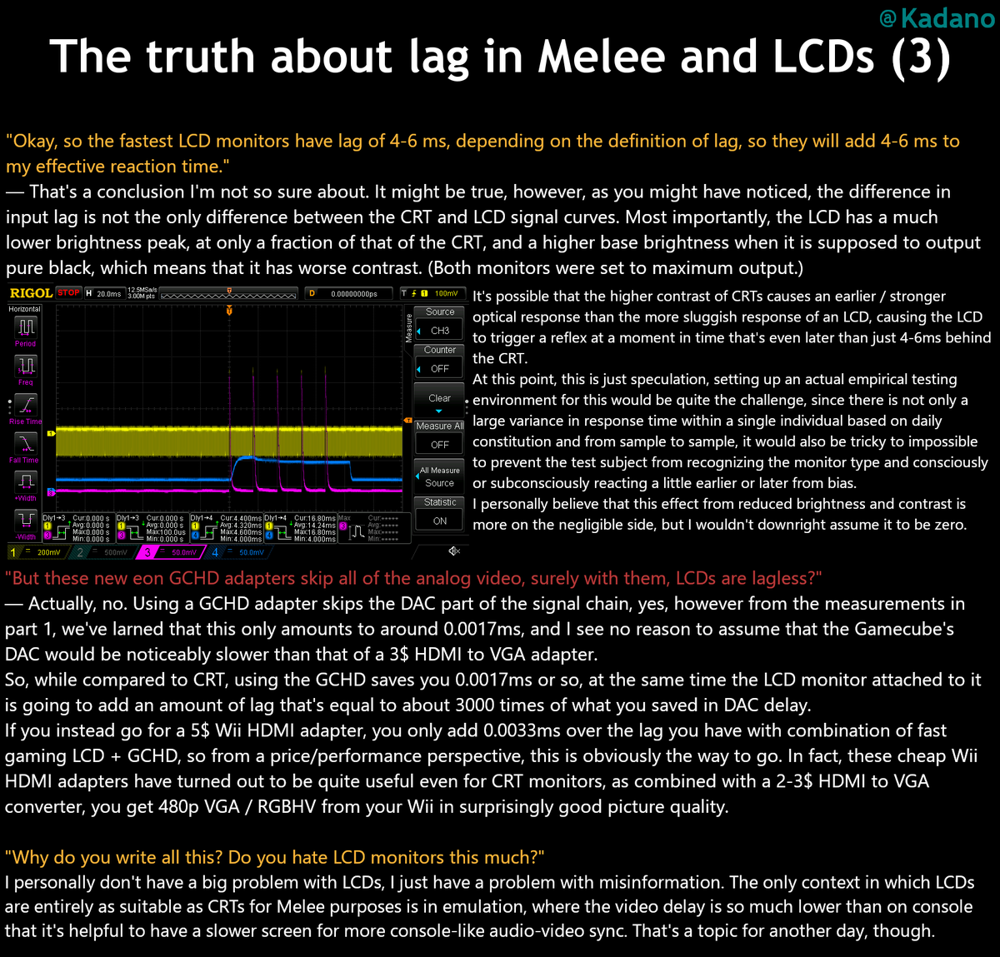
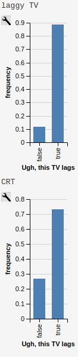
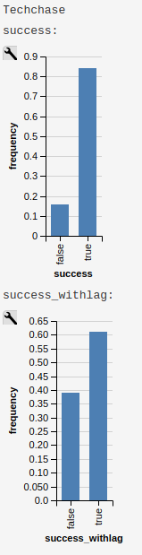

Delays Have Dangerous Ends: On Monitors in SSBM
Table of Contents
Delays Have Dangerous Ends: On Monitors in SSBM
Abstract
Should we use monitors for SSBM tournaments? Depends on what you care about. Should we be informed about the differences between monitors and CRTs? Yes, especially in the midst of people with financial interest in the question. A short review of the empirical evidence about input latency perception and "lagless" monitors in Super Smash Brothers Melee.
Introduction
With Low Tier City 7 sparking the dreaded monitors-or-no-monitors debate for the hundredth time, I figured it would be a good idea to gather the current empirical evidence relevant to the monitors discussion.
I think there are three fundamental questions to explore in this conversation, and I will attempt to summarize in this document what I consider "the literature" on these topics:
- Do monitors have lag?
- If monitors have lag, can humans perceive lag differences of such a small scale?
- Do small changes in input delay affect gameplay?
I think these three questions are largely independent of each other; even if you can't tell that there is lag on your inputs, your reaction time / timing windows are all moved that small amount and will still affect your play (if lag affects play) regardless of how you feel about it. As such, I will be visiting each question separately below.
Empirical Measurements on Input Delay
I frequently hear claims that high-end gaming monitors are "lagless" or, worse still, "1ms". Rather than listen to claims made on advertisements trying to sell you something, I encourage you to consult the wisdom of our very own world-class community technical expert - Kadano1.
For this discussion, there are two important "myths" Kadano has debunked through empirical measurement. The first is that LCD lag exists due to analog-digital conversion. This one is pervasive, and to my knowledge is the claim used by EON to market their extremely expensive converters as "truly lagless". This is empirically debunked by Kadano; even the cheap $3 HDMI to VGA adapters are comparably also lagless, clocking in at a whopping 0.0033ms. No measurements exist for the EON adapters, but I'm sure we can take them at their word here, since it doesn't matter much for the chain anyways.
The display lag (which is different from response time, which is what typically gets advertised) on monitors was empirically measured by Kadano to be on the order of 5ms above CRT. I've reproduced his summary of the work below, and there isn't really much I need to add to it. The fact that monitors have this degree of delay is relatively unambiguously true to anybody informed on the topic and has been independently verified by other smart people in the scene such as Fizzi2.
  
As a very important aside, Kadano mentions near the end here that input lag for emulation is much lower than console melee. The reason that this is the case is that native console has lag also! It just applies equally to CRT and LCD, so it's canceled out in measuring it. Once again, this is very well documented by Kadano, who measured the difference in console and dolphin input lag. Console melee has an inherent input lag of roughly 3 frames, and reducing this is what allows netplay to function close to CRT despite requiring signal to be sent between players. There's other wonkiness with emulation (see: delayed audio), but it's important to remember this for later: console play has ~3 frames of lag.
Human Input Latency Perception
We have established that LCD Monitors, even good ones, unambiguously and demonstrably have somewhere around 5-6 milliseconds of lag. "But so what?" you might say, "it's obvious that 5-6 ms of lag is going to be completely invisible to human perception!"
Well, if there is any one thing I've learned from studying cognitive science, it's that pretty much nothing about human perception is obvious, pretty much in any capacity.
And indeed, I feel that a lot of the people making these sorts of claims of "clear obviousness" are doing so from a place underestimating the utter insanity that is human perception.
Latency Perception is a Binary Variable
You may have experienced the following phenomenon before: you are in a crowded, noisy room with many people talking at once. Suddenly, from across the room, you hear someone say your name and whip your head around immediately. They didn't shout your name, and you couldn't hear them talking before, but as soon as your name was spoken their voice "stepped forward" in your perception and you immediately started to pay attention to it. This is called the "cocktail party effect"3
But, isn't this strange? In a manner of speaking, this sort of feels like you're predicting the future, doesn't it? You weren't listening to them talking before, but your brain begins to pay attention to them exactly when your name is spoken, as if you could tell in advance that your name was about to be spoken. What's going on here? Do you really have ESP?4
As it turns out, this is not what is happening (alas! you will have to get your sick reads the same way everybody else does, without telepathy). The mechanism underlying this is called selective attention, and it is pervasive in a great deal of human perception. You just can't reasonably pay attention to all of your sensory input all at once, so your mind will automatically tune things out that aren't immediately necessary. This is why you rarely pay attention to how your clothes feel against your body, how your tongue feels in your mouth, your control over your breathing, how your feet feel against the floor, and - in the case of the cocktail party effect - what everybody in the party is saying, all at once.
But, importantly, you are still getting all of this sensory input. You can call any of it forward at any time, and it doesn't exactly go away when you stop paying attention to it. The explanation for the exact mechanism at play here has evolved with the research over time, but the 1000-foot view is that your sensory input goes through filtering before it ever reaches your conscious awareness. You hear a stream of auditory stimuli, your brain processes it, and then delivers to you what you thought you heard. By the time you are actually perceiving the audio, it has already happened, and your mind has quite literally stitched reality back together for you, which allows your name to "immediately" jump forward in a noisy room in your perception.
Put another way, real-time is not real-time.
Personally, I consider selective attention one of the craziest things about human perception because it highlights the relatively enormous gap between all of the sensory input you get and the narrow band of things you are actually perceiving at any given time. My absolute favorite example of this comes from Simons & Chabris 19995:
I wanted to introduce this idea of selective attention because it allows me to transition nicely into what might be the most important work in the scientific literature about understanding input latency perception: Spence and Squire 20036. Since we've nicely established that the human mind can operate upon sensory inputs before actual perception occurs, we can understand a bit more about how the human mind conceptualizes the idea of two things happening at the same time. Most people could tell you that light moves a lot faster than sound does (see: thunder vs lightning), but most people rarely think about why most things seem to have their audio and video components synchronized even if physics would tell us one comes a good amount after the other (e.g. someone talking to you far away).
Spence and Squire explored this idea called the "horizon of simultaneity". Simply put, when an audio and a visual stimulus occur near each other, if they are within this horizon then the human mind will quite literally re-synchronize them in human perception, a phenomenon they called "temporal ventriloquism". There is a relatively generous window for this to occur: it's around 100 milliseconds for most stimuli, and all the way up to 250 milliseconds for human speech. Longer than this, and you won't get the restitching effect (again, see thunder vs lightning).
This paper and our question differ a little bit - Spence and Squire deal with audio/video disparity and we're interested in audio-visual/visuomotor disparity. However, it's important to understand this paper since it's critical to understand what is happening "under the hood" when people think two things are synchronized. If you cannot tell that lag exists in your task, then your mind has successfully literally reordered them to be synchronized again, which is part of why the discussion on this topic within SSBM is so heated. If you can't tell that there is any lag, that is in large part because your mind has literally warped reality to resynchronize these two things for your convenience, irrespective of the presence of any lag.
Visuomotor Perception
So, is there any published research on visuomotor perception of input latency? As far as I could tell, there wasn't. But, we have the next best thing, which is unpublished undergraduate research performed by yours truly!7
A few years ago, I happened to do my undergraduate senior thesis in cognitive science about this very topic: Input Latency Detection in Expert-Level Gamers. Sadly, this research never got far enough to make it to publication (I graduated and I was the only one at the lab with access to the test subjects in question), so feel free to take it with a healthy grain of salt, but as far as I could find at the time this is the extent of research into this question. That said, this is an informal writeup for a niche gaming community, so I suppose it will have to do.
For this experiment, I went around to melee tournaments with an electronic device made with an arduino mega which I programmed to show the participant precisely timed flashes of light and sound whenever they pressed a button. I would vary the amount of delay depending on their ability to detect lag, and would sprinkle in lagless conditions in order to determine around where people couldn't reliably tell if there was lag present or not.
To make a long story short, gamers were much better at this than our control group, with their detection thresholds averaging 48.4ms and ~100ms respectively. From a research perspective, I thought this was awesome (they're so different! The best control were comparable to the worst gamers!). But for the purposes of our question, what does it mean for monitor usage?
You might be tempted to wash your hands of this and say "48.4 > 6, ergo it cannot be detected", but remember from earlier - console melee on CRT inherently has 3 frames of lag. What is 3 frames of lag?
50 milliseconds.
Suddenly, that 5-6ms figure starts to get a little more nefarious, doesn't it? It is now at least plausible that moving that 3f delay up a few milliseconds could push a sizable portion of the tournament population over the "lag detection horizon". People like simulations, so let's write up a toy experiment in webPPL8.
var laglogic = function(lagpresence) {
return Infer({method: 'rejection', samples: 10000},
function(){
var player = gaussian({mu: 48.4, sigma:10});
var lagamount = 6;
var consolelag = 55.7 + uniform(-8.33, 8.33);
var laggytv = flip();
condition(laggytv == lagpresence);
var lag = laggytv ? consolelag+lagamount : consolelag;
return {'Ugh, this TV lags': player<lag};
})
}
print("laggy TV")
viz.auto(laglogic(true));
print("CRT")
viz.auto(laglogic(false));
Imagine you model the average smasher with a gaussian around 48.4ms with a standard deviation of 10ms9, and model the inherent console lag as a uniformly random variable centered around 55.7ms (see Kadano's measurements) note: console lag is random from the pov of a player, but uniformly so based on polling timer drift which can be anything from 0ms to 16.66ms10. Among these, how many people would be able to theoretically perceive the lag on a CRT (nolag) vs on an LCD (islag)?

The important thing here is to look at the changes: between the two conditions, how many people are sensitive enough to this threshold to notice them being different? In this situation we can directly model it; roughly 14% of the population moves from "can't tell" to "can now tell". Most people don't experience any change in this toy example (both cases "feel laggy" or "don't feel laggy" to most players), but it's close enough to the mean that a perturbation of 5ms is enough to push a very substantial chunk over the line.
The comparison is a little bit oversimplified (it may be harder to perceive input delay on a more domain-specific task such as melee, and virtually nobody complains about CRT lag even if they could perceive it) but webppl is embedded into javascript so I encourage you to play around with the toy example yourself and see how it changes if you change some of these assumptions around (different standard deviations, different means, etc). In general, though, it seems pretty plausible that small perturbations could be noticed even by average smashers. Inconclusive? Perhaps. Ridiculous to believe? Definitely not.
Is Gameplay Affected by Lag?
Finally, we arrive at the question of whether or not gameplay can be substantially affected by slight changes in input delay (in our case, of about 5ms). For the purposes of this question, I'll be considering the hypothetical scenario of a player who does not know there is lag and performs inputs identically the same on both monitors and CRT. This is pretty obviously not always the case (playing with what you feel as lag is distracting, and the placebo effect is definitely a real thing regardless of whether you can perceive the lag or not), but it simplifies the discussion. It's important to note that this question is independent of the actual perception of the lag, as if you aim for the center of a window and that window moves, your success rate will change even if you think you are aiming at the correct spot.
Importantly, input delay will not really affect your inputs relative to your inputs, since input delay is a global phenomenon. As a rule of thumb, if you could do something with your eyes closed, then input lag will not damage your ability to do it. Your wavedashes, for example, will be the same in both versions, since both inputs will be delayed by the same amount. Input latency affects only (and all) situations where you react to some sort of stimuli before acting - anything for which you use a visual cue, any reaction (e.g. tech chasing), and so on. So, it would be nice if we could model how the probability of your rate of success in these scenarios changes before and after the presence of some added lag.
Thankfully, this has already largely been modeled by Fizzi, who ran through some toy examples back in 2014. This article is frequently touted by monitor enthusiasts as proof that monitors do not affect gameplay. However, while I agree with all of Fizzi's methods and love this article, I drew the opposite conclusions from him using the same examples. Where I think Fizzi's article shines is that it precisely details hypothetical situations which measure exactly how different monitors would be from CRT.
Fizzi provides three examples of inputs being moved a few milliseconds for successful execution of a 2 frame window, and the resulting differences in probability of success. A perfectly centered mean with 95% success rate gets moved to 93.7%, a slightly off-center input with 62.3% success rate goes to 49%/74.2% (depending on direction), and a very laggy monitor (16.66ms) moves even a perfectly centered 95% success rate to 50%.
Fizzi uses this to argue that the difference is fairly small and only really affects players who are not that proficient at tech anyways, but I very much disagree with this assessment! I think that something like powershielding is often worth going for even if you're only 66% successful at it, and the fact that this moves so much is very significant to me. I think this is largely a subjective question, but personally I drew very much different conclusions from this exercise. Small changes to the means of gaussians can significantly move the percentage of the distribution that falls within a specific window for success, which heavily affects situations in which competitors often deliberately aim for the first or last few frames of the window rather than the center (i.e. wakeup, reaction tech chase)
But don't take my word for it - play around with it yourself! Below please find another WebPPL program you can use to model specific situations, and come to your own conclusion about whether monitors would affect gameplay in this toy example of melee. In my examples, the same gaussian that gets 95% -> 93% for fizzi's measurements moves the "techchase" example from 85% to 61% using lag measurements from Kadano's tweets.
var run_scenario = function(framewindow, frametime, aim, sig, lagamount) {
var input = gaussian({mu: (framewindow*frametime)*aim, sigma:sig});
var input_withlag = input+lagamount
var success = (input > 0 && input < frametime*framewindow)
var success_withlag = (input_withlag > 0 && input_withlag < frametime*framewindow)
return {'success': success, 'success_withlag': success_withlag};
}
//Kadano lag measurements, perfect center mean: 95 -> 89%
var powershield = function() {
var framewindow = 2 //window of technique
var frametime = 16.66 //length of 1 frame
var aim = 0.5 //where in the window you want to hit, range from 0 to 1
var sig = 8.4 //stdev
var lagamount = 6 //amount of lag, in ms
return run_scenario(framewindow, frametime, aim, sig, lagamount)
}
//Fizzi lag measurements, perfect center mean: 95->93.7%
var powershield_fizzi = function() {
var framewindow = 2 //window of technique
var frametime = 16.66 //length of 1 frame
var aim = 0.5 //where in the window you want to hit, range from 0 to 1
var sig = 8.4 //stdev
var lagamount = 2.86 //amount of lag, in ms
return run_scenario(framewindow, frametime, aim, sig, lagamount)
}
//Kadano lag measurements, aiming for center of first frame on wakeup 85%->96%
var wakeup = function() {
var framewindow = 5 //window of technique, let's say it's generous if you're late
var frametime = 16.66 //length of 1 frame
var aim = (0.5 * (frametime))/(framewindow*frametime) //where in the window you want to hit, range from 0 to 1
var sig = 8.4 //stdev
var lagamount = 6 //amount of lag, in ms
return run_scenario(framewindow, frametime, aim, sig, lagamount)
}
//Kadano lag measurements, aiming for center of last frame of techchase 85% -> 61%
var techchase = function() {
var framewindow = 4 //window of technique
var frametime = 16.66 //length of 1 frame
var aim = ((framewindow*frametime) - (0.5*frametime))/(framewindow*frametime) //where in the window you want to hit, range from 0 to 1
var sig = 8.4 //stdev
var lagamount = 6 //amount of lag, in ms
return run_scenario(framewindow, frametime, aim, sig, lagamount)
}
var distpshield = Infer(
{method: 'rejection', samples:10000},
powershield);
var distpshield_fizzi = Infer(
{method: 'rejection', samples:10000},
powershield_fizzi);
var distwakeup = Infer(
{method: 'rejection', samples:10000},
wakeup);
var disttechchase = Infer(
{method: 'rejection', samples:10000},
techchase);
//visualize
print("Powershield")
viz.marginals(distpshield);
print("Powershield (Fizzi measurements)")
viz.marginals(distpshield_fizzi);
print("Wakeup")
viz.marginals(distwakeup);
print("Techchase")
viz.marginals(disttechchase);

It's very possible you don't agree with some part of this toy design; maybe your lag measurements are different, maybe your standard deviations are different, maybe you aim for a different part of the frame to reduce risk at the cost of being late or giving you less time to react - there are a lot of variables you can tune here. The point is that you can just see for yourself how your devised scenario changes from CRT to LCD. You can literally go to http://webppl.org/ and paste the above code into the box and run it with your proposed changes, and check if it makes a difference. Key here, though, is that "makes a difference" is entirely up to you. Is a 3% difference important? Is a 5% difference? How about a 20% difference?
Conclusions
I think changing a major part of the tournament infrastructure for the melee community is a huge decision, and as such I think it's very important that everybody be reasonably well-informed on the topic before a major decision is made (rather than after).
I think there are good, reasonable arguments for introducing monitor melee into the tournament ecosystem. The dwindling CRT supply, logistics and transportation, sponsorships, whatever. While I can't claim to particularly care about any of these topics (I'm not a TO, after all, I just play the game), they are reasonable arguments, and I'm willing to hear out people that claim the drawbacks of monitors are worth the benefits for the greater scene. It's not like the monitors are unplayable (I own one myself, even if I never use it).
What bothers me is when people make repeatedly falsifiable or unsubstantiated claims either to make themselves seem right or to fit whatever narrative they want to sell to people. I've heard any number of insane claims about this topic, everything from "all CRTs have more lag than monitors anyways" to "the only way to get lagless monitor melee is buying our $200 converter". These comments range from inane to outright dishonest, but I hope this document serves as some small resource a few people can use to learn about the topic in a centralized location.
But to ultimately answer the three original questions, here are what I consider to be the answers to them:
1. Do monitors have lag?
Yes, unambiguously and verifiably, monitors have 4-6ms of lag depending on the thresholds you use to measure it.
2. If monitors have lag, can humans perceive lag differences of such a small scale?
There's not that much research on the topic, and none of it is peer-reviewed, but I think it's very plausible that smash players can perceive lag changes between monitors at roughly the threshold in question, even though I think perceptually it is quite literally exactly the same for people who it does not affect.
3. Do small changes in input delay affect gameplay?
This depends on your thresholds for "affect gameplay" but I think the answer is a fairly obvious yes; moving your input windows around definitely affect your success rate, and whether or not you think it moves the success rate enough to make a difference depends on your tunable parameters for "enough" and "a difference".
If you have comments, I'm usually available on twitter @Ambisinister_, and thank you for reading!
Footnotes:
Maybe Alan Turing was right https://twitter.com/Ambisinister_/status/1145904457189855233
The paper is literally titled "Gorillas in our midst" which is great http://www.chabris.com/Simons1999.pdf
a bit of a spherical cow, but roll with me
http://kadano.net/SSBM/inputlag/ see section CSC2